# Instala os pacotes (se necesário)
packs <- c("ggplot2", "tidyr", "dplyr", "forcats", "GetBCBData")
install.packages(packs)
# Carrega os pacotes
library(ggplot2)
library(tidyr)
library(dplyr)
library(GetBCBData)Destacando informação
Um gráfico deve ser o mais autosuficiente possível; a imagem deve explicar-se por si mesma. Existem algumas ferramentas adicionais que pode-se usar para atingir este objetivo. Neste post vou discutir três estratégias simples para destacar uma informação no gráfico.
Especificamente, vamos ver como:
- Usar linhas para destacar os eixos ou informações numéricas com
geom_vline(),geom_hline()egeom_abline() - Destacar partes do gráfico com
geom_rect() - Destacar informações numéricas e texto usando
geom_text()eannotate()
R
Os pacotes necessários para acompanhar este post estão destacados abaixo. A partir deste post começo a utilizar os pacotes da família tidyverse para fazer a manipulação de dados. Apesar do foco do post ser apenas a visualização vou explicar um pouco do que está acontecendo em cada estágio do código. Se você deseja uma introdução mais completa a estes pacotes veja o post Manipular para Enxergar.
1. Desenhando linhas
Básico
Já sabemos como desenhar linhas usando tanto o geom_line() como o geom_path(). Estas funções exigem dois a três arguemntos que especficam as coordenadas da linha e de que forma a linha deve unir estas coordenadas.
Suponha, por exemplo, que se queira desenhar uma linha reta no eixo-x. Para isto precisamos estruturar um data.frame, informar as coordenadas e então chamar geom_line().
Note como no código abaixo, não preciso repetir o valor y = 0 já que o tibble “recicla” este número para que ele tenha o mesmo comprimento (length) que o vetor x.
df <- tibble(
x = c(1, 10),
y = 0
)
ggplot(df, aes(x = x, y = y)) +
geom_line()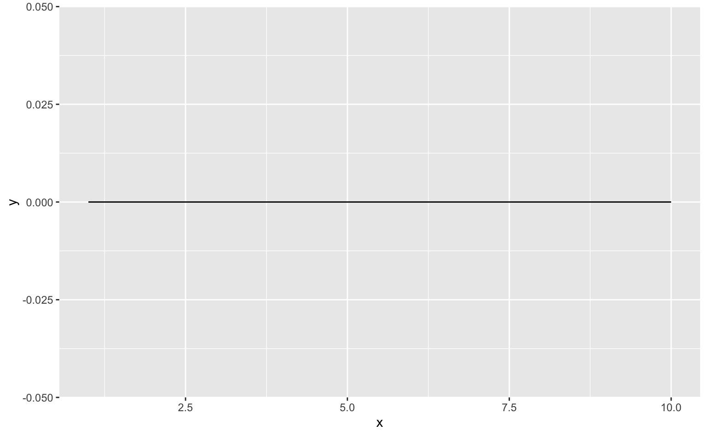
O procedimento acima é nada prático, exige a criação de um data.frame apartado dos dados e as linhas ainda tem comprimento fixo. Para desenhar linhas retas arbitrárias com maior facilidade há três funções:
geom_vline- Desenha linhas verticaisgeom_hline- Desenha linhas horizontaisgeom_abline- Desenha linhas retas especificando o intercepto e a inclinação.
ggplot() +
geom_vline(xintercept = 0) +
geom_hline(yintercept = 0)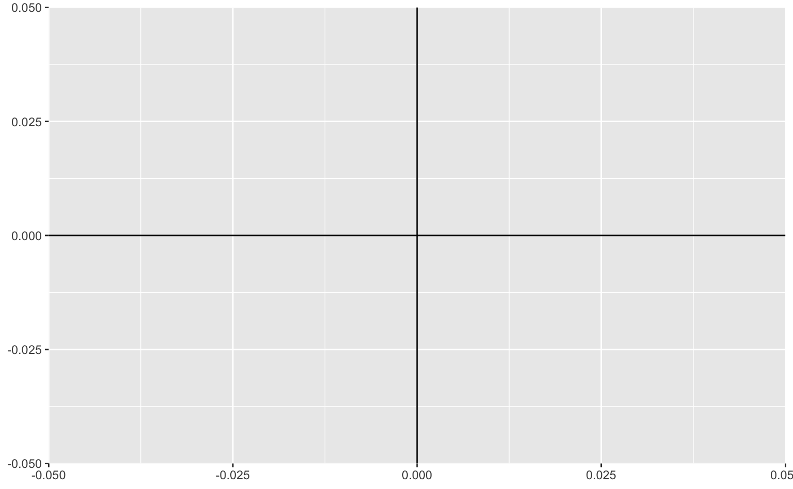
A função geom_abline() segue a equação da reta \(y = ax + b\) onde \(a\) é a inclinação da reta (slope) e \(b\) é o intercepto (intercept) o ponto onde a linha cruza o eixo vertical.
ggplot() +
geom_vline(xintercept = 0) +
geom_hline(yintercept = 0) +
geom_abline(slope = 1, intercept = 0)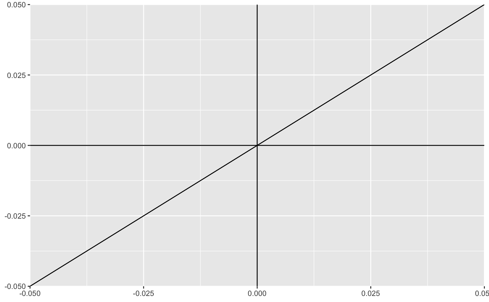
Desenhando eixos num gráfico
O uso mais imediato destas funções é de desenhar eixos num gráfico. O gráfico de dispersão abaixo mostra a relação entre a taxa de desmprego e a taxa de poupança, usando a base economics. A inclusão do eixo-x e eixo-y ajudam a melhor contextualizar os dados.
ggplot(economics, aes(uempmed, psavert)) +
geom_vline(xintercept = 0) +
geom_hline(yintercept = 0) +
geom_point()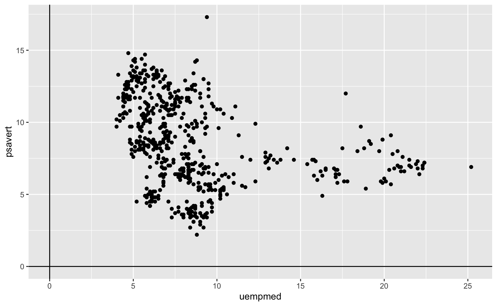
Destacando informações com linhas
Também pode-se usar linhas para destacar algum tipo de informação no gráfico. Nos exemplos abaixo mostro como destacar o valor médio e mediano ou os quintis.
Média e mediana num gráfico
No gráfico abaixo, mostro a distribuição mensal de listings de imóveis (anúncios de imóveis) em Houston, TX. No código eu uso geom_hline() para exibir uma linha reta no eixo-x e geom_vline() para destacar os valores médio e mediano. A linha tracejada em vermelho indica o valor médio, enquanto a linha tracejada em amarelo indica o valor mediano.
subhousing <- filter(txhousing, city == "Houston")
ggplot(subhousing, aes(x = listings)) +
geom_histogram(bins = 6, color = "white", fill = "#1B6F88") +
geom_hline(yintercept = 0) +
geom_vline(
xintercept = mean(subhousing$listings, na.rm = TRUE),
color = "#9e2a2b",
linewidth = 1,
linetype = 2
) +
geom_vline(
xintercept = median(subhousing$listings, na.rm = TRUE),
color = "#e09f3e",
linewidth = 1,
linetype = 2
)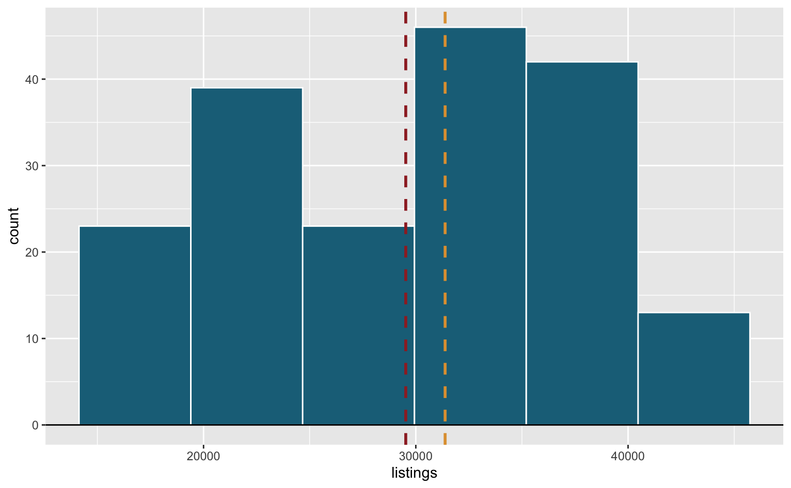
Quintis ou grupos
Para desenhar múltiplas linhas basta passar o argumento como um vetor. No caso abaixo eu calculo os quintis do taxa de poupança da base economics e sobreponho estas linhas ao histograma.
quintil <- quantile(economics$psavert, probs = c(0.2, 0.4, 0.6, 0.8))
ggplot(economics, aes(x = psavert)) +
geom_histogram(bins = 15, color = "white") +
geom_vline(xintercept = quintil)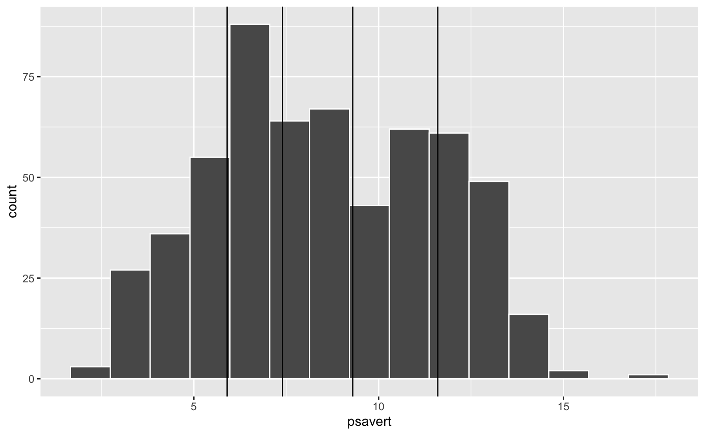
Por fim, pode-se também passar as linhas como um argumento estético em color. No código abaixo eu calculo o número total de listings por ano; no gráfico, cada ano é exibido numa linha com cor diferente.
listing <- subhousing %>%
filter(year < 2015) %>%
summarise(total_listing = sum(listings, na.rm = TRUE), .by = "year")
ggplot(listing) +
geom_vline(aes(color = year, xintercept = total_listing)) +
scale_color_viridis_c()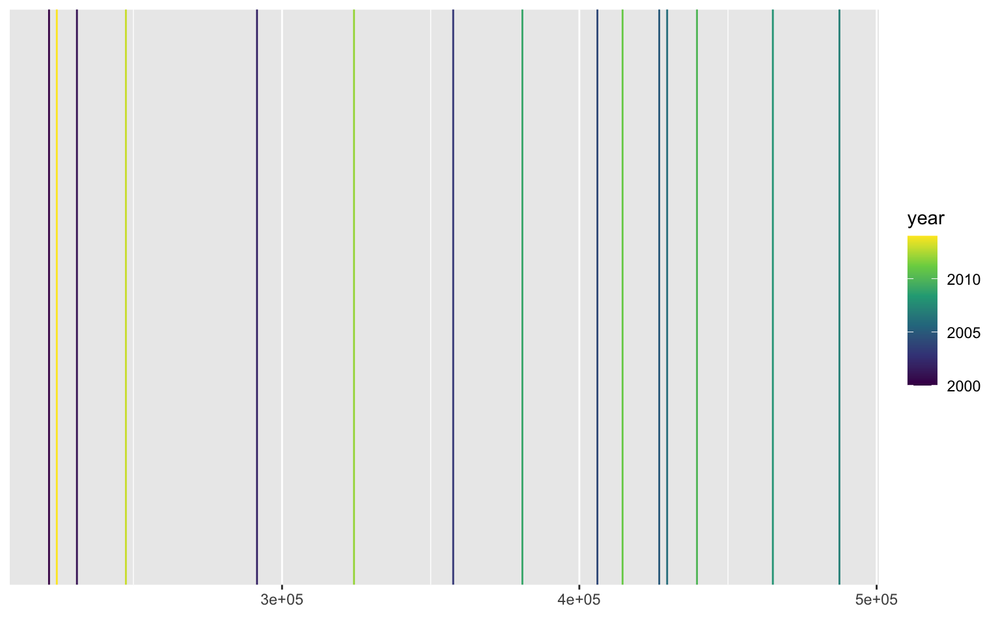
2. Desenhando retângulos
Agora vamos aprender a desenhar retângulos usando a função geom_rect(). Esta função exige quatro argumentos que servem para desenhar um retângulo no plano cartesiano. O código abaixo apresenta um exemplo simples.
ggplot() +
geom_rect(aes(xmin = 1, xmax = 2, ymin = 2, ymax = 3)) +
scale_y_continuous(limits = c(0, 4)) +
scale_x_continuous(limits = c(0, 4))
A função geom_rect() aceita argumentos estéticos similares ao geom_column() e geom_histogram(). Ou seja, pode-se:
- Alterar a cor da borda do quadrado usando
color. - Alterar a cor do quadrado em si usando
fill. - Alterar a transparência do quadrado usando
alpha.
PIB e ciclos de recessão
Vamos aplicar esta função num exemplo mais interessante. Primeiro vamos baixar a série do PIB brasileiro1 do site do Banco Central do Brasil usando a função gbcbd_get_series(). O código abaixo, além de baixar a série, também faz um gráfico de linha simples.
# Importa a série do PIB
pib <- gbcbd_get_series(22109, first.date = as.Date("1995-01-01"))
ggplot(pib, aes(ref.date, value)) +
geom_line()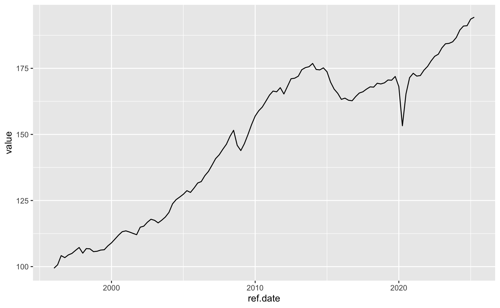
Para mapearmos os ciclos de recessão uso as definições da CODACE2. A tabela indica o início e o final de cada recessão, junto com uma sigla que identifica cada recessão. Eu crio esta tabela usando a função tribble(). Esta função é, essencialmente, equivalente a um data.frame() convencional, mas permite colocar os dados num formato que fica mais legível3.
codace <- tribble(
~rec_start,
~rec_end,
~label,
#-------------------#----------------------#----------#
as.Date("1997-10-01"),
as.Date("1999-01-01"),
"FHC-1",
as.Date("2001-01-01"),
as.Date("2001-10-01"),
"FHC-2",
as.Date("2002-10-01"),
as.Date("2003-04-01"),
"LULA",
as.Date("2008-07-01"),
as.Date("2009-01-01"),
"GFR",
as.Date("2014-01-01"),
as.Date("2016-10-01"),
"DILMA",
as.Date("2019-10-01"),
as.Date("2020-04-01"),
"COVID"
)O código abaixo gera o mesmo gráfico do PIB, mas agora temos retângulos sombreados destacando cada uma das recessões da história econômica recente do Brasil.
Como estou mapeando dados de dois objetos distintos, eu coloco o argumento data dentro da respectiva função geom(). Isto não é obrigatório, mas acredito que o código fica melhor estruturado desta maneira.
Note o uso do Inf para garantir que o retângulo se estenda verticalmente no gráfico de maneira indefinida. Além disso, uso o argumento alpha para deixar a região mais transparente.
ggplot() +
geom_line(
data = pib,
aes(x = ref.date, y = value)
) +
geom_rect(
data = codace,
aes(
xmin = rec_start,
xmax = rec_end,
ymin = -Inf,
ymax = Inf,
group = label
),
alpha = 0.4
)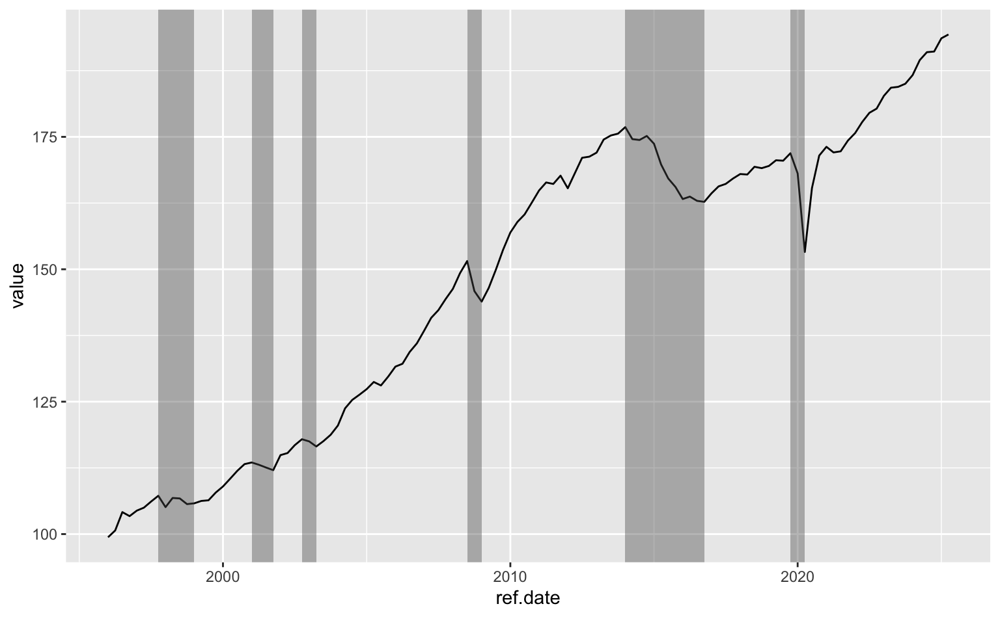
3. Usando texto
Pode-se inserir texto diretamente num gráfico gerado pelo ggplot usando a função annotate. Esta função posiciona um texto numa posição específica do gráfico.
O exemplo abaixo aproveita uma base de dados bastante popular do R chamada mtcars. Esta tabela traz algumas informações sobre carros4.
A função annotate é bastante simples: os argumentos x e y especificam a posição do texto e o argumento label é o texto propriamente dito. Note que é possível adicionar quebras de linha usando \n.
ggplot(mtcars, aes(x = wt, y = mpg)) +
geom_point() +
annotate("text", x = 4, y = 25, label = "Aqui, um pouco\nde texto.")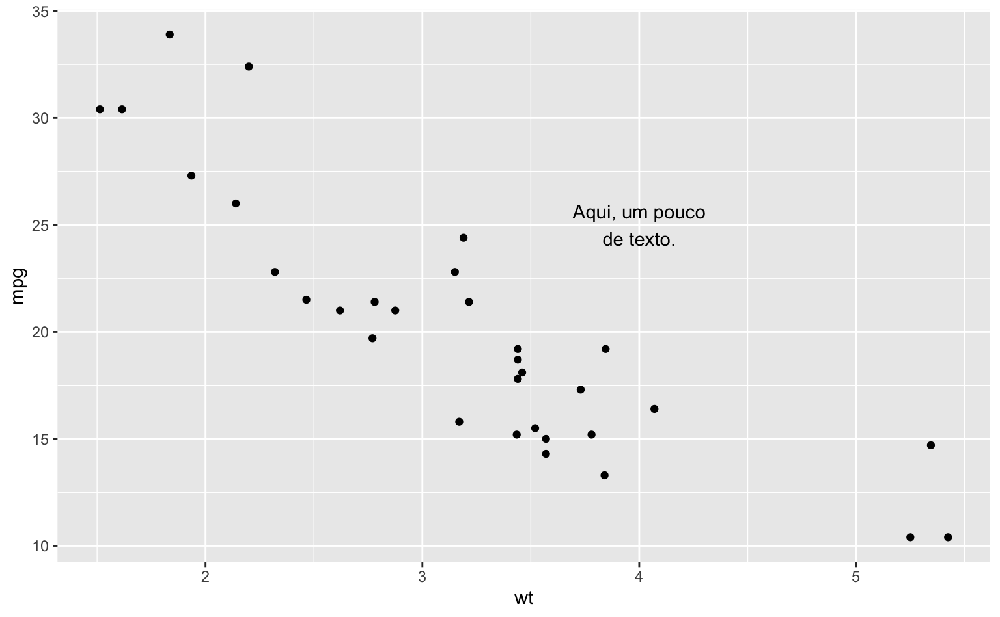
Esta função é útil para criar pequenas caixas de texto no gráfico que podem servir para destacar alguma informação pontual. Ela é especialmente prática quando temos alguma informação que não está dentro de um data.frame, até por isso esta função não tem os argumentos usuais data e aes de todas as outras funções geom.
No exemplo abaixo mostro como é possível escrever em notação matemática usando esta função.
ggplot(mtcars, aes(x = wt, y = mpg)) +
geom_point() +
annotate(
"text",
x = 2,
y = 12,
label = "paste(italic(R) ^ 2, \" = .75\")",
parse = TRUE
) +
annotate(
"text",
x = 5,
y = 30,
label = "y[t] == phi[1] * y[t-1] + e[t]",
parse = TRUE
)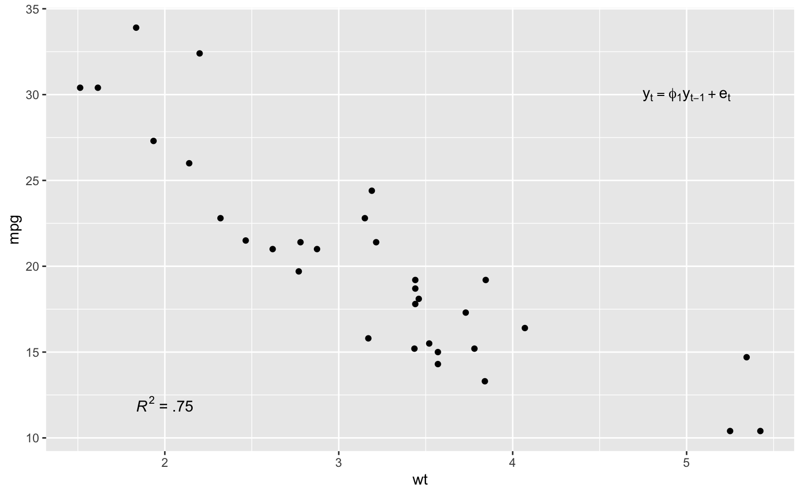
Usando geom_text
Quando queremos trabalhar com texto como uma variável num data.frame é mais adequado usar a função geom_text(). Esta função tem os memos três argumentos obrigatórios da função annotate():
x- Especifica a posição do texto no eixo-xy- Especifica a posição do texto no eixo-ylabel- Texto a ser plotado
Além do básico, também pode-se alterar diversos elementos estéticos usando:
color- Para alterar a cor do texto.familyefontface- Para alterar a fonte do texto ou deixar ele negrito, itálico, etc.size- Para alterar o tamnho do texto.alpha- Para alterar a transparência do texto.angle,vjust,hjust- Para ajustar o alinhamento horizontal e vertical do texto.
O código abaixo refaz o gráfico acima, mas ao invés de pontos, agora vê-se o nome do modelo de cada automóvel.
ggplot(mtcars, aes(x = wt, y = mpg)) +
geom_text(aes(label = rownames(mtcars)), size = 3)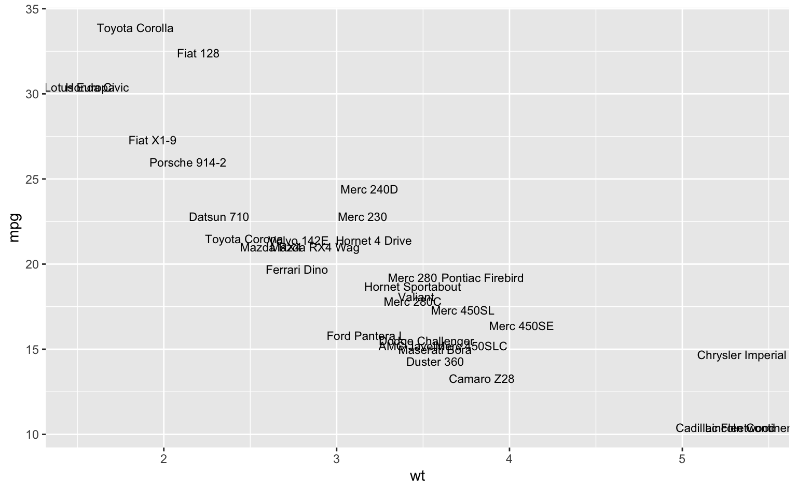
No gráfico acima, o eixo-y (mpg) é “milhas por galão”, isto é, quantas milhas o carro consegue percorrer por galão de combustível enquanto o eixo-x (wt) é o peso do veículo em milhares de libras. Assim, o Toyota Corolla é um carro leve e eficiente, enquanto o Chrysler Imperial é um carro pesado e ineficiente.
Um problema frequente deste tipo de gráfico é a sobreposição dos nomes. De fato, vale a pena considerar encurtar os nomes ou usar abreviações para atenuar este tipo de problema. Outra opção é usar a extensão ggrepel5.
Exemplo: Estados e Aluguel
A tabela abaixo reúne alguns fatos da PNADC/A mais recente sobre o percentual de apartamentos, em relação ao total de domicílios, e o percentual de imóveis alugados, também em relação ao total de domicílios.
rented <- tibble::tribble(
~abbrev_state,
~share_apto,
~share_rented,
~name_region,
#------------#------------#--------------#------------#
"RO",
8,
11.1,
"Norte",
"AC",
7.47,
6.93,
"Norte",
"AM",
15.8,
7.26,
"Norte",
"RR",
14.3,
11.7,
"Norte",
"PA",
4.53,
6.39,
"Norte",
"AP",
10.7,
6.34,
"Norte",
"TO",
3.17,
11.7,
"Norte",
"MA",
4.06,
5.74,
"Nordeste",
"PI",
4.08,
5.15,
"Nordeste",
"CE",
9.85,
9.68,
"Nordeste",
"RN",
9.27,
10.8,
"Nordeste",
"PB",
11.9,
9.18,
"Nordeste",
"PE",
10.4,
9.98,
"Nordeste",
"AL",
6.32,
10.0,
"Nordeste",
"SE",
12.0,
11,
"Nordeste",
"BA",
12.0,
7.61,
"Nordeste",
"MG",
14.0,
10.5,
"Sudeste",
"ES",
21.7,
10.7,
"Sudeste",
"RJ",
26.8,
10.7,
"Sudeste",
"SP",
19.4,
12.7,
"Sudeste",
"PR",
11.9,
11.7,
"Sul",
"SC",
17,
11.8,
"Sul",
"RS",
16.5,
8.46,
"Sul",
"MS",
3.67,
11.9,
"Centro Oeste",
"MT",
3.29,
12.7,
"Centro Oeste",
"GO",
9.88,
13.6,
"Centro Oeste",
"DF",
35.4,
17.8,
"Centro Oeste"
)Pode-se visualizar este gráfico usando a sigla de cada estado e os números na tabela como a posição do texto. Assim, fica evidente como o DF tem uma proporção grande de apartamentos e de domicílios alugados. Maranhão e Piauí, por outro lado, tem poucos apartamentos e poucos domicílios alugados. Já Goiás tem um percentual relativamente grande de unidades alugadas, apesar de ter quase 90% de casas.
ggplot(rented, aes(x = share_apto, y = share_rented)) +
geom_text(
aes(label = abbrev_state),
size = 4
)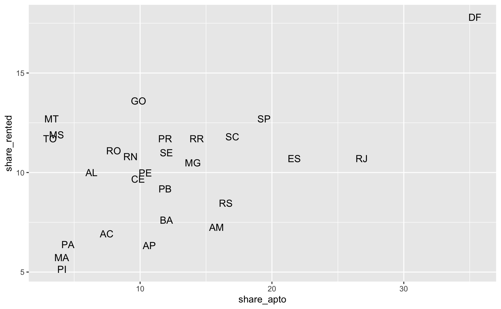
Pode-se, naturalmente, mapear uma das variáveis categóricas num elemento estético. No gráfico abaixo, cada região é destaca com uma cor distinta.
ggplot(rented, aes(x = share_apto, y = share_rented)) +
geom_text(
aes(label = abbrev_state, color = as.factor(name_region)),
size = 4
) +
scale_color_brewer(name = "Região", type = "qual", palette = 6) +
theme(legend.position = "top")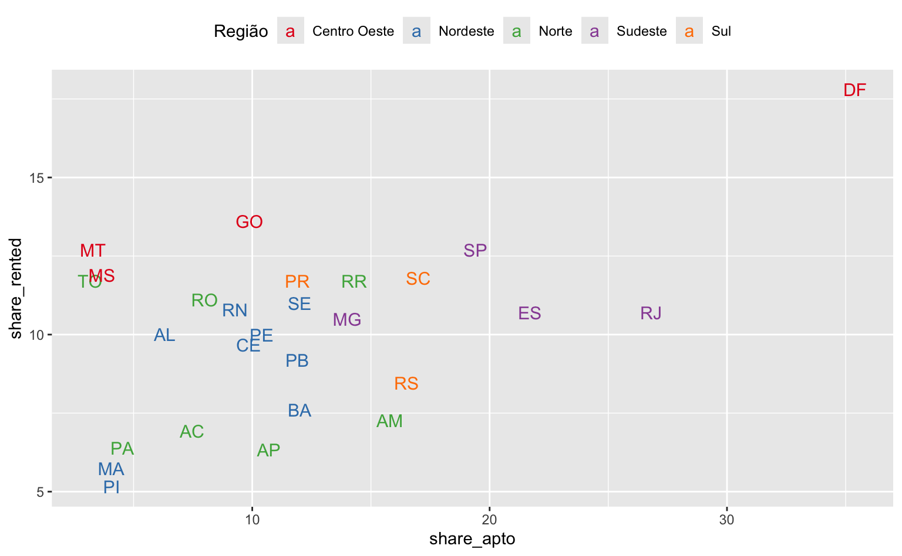
Por fim, vale notar que existe uma função equivalente chamada geom_label. A única diferença desta função é que ela coloca o texto dentro de um pequeno quadrado com fundo branco.
ggplot(rented, aes(x = share_apto, y = share_rented)) +
geom_label(
aes(label = abbrev_state, color = as.factor(name_region)),
size = 4
) +
scale_color_brewer(name = "Região", type = "qual", palette = 6) +
theme(legend.position = "top")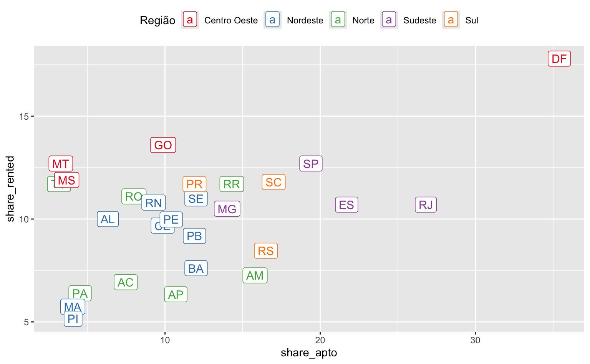
Trocando a fonte
Como citado acima, é possível modificar a fonte do texto usando o argumento family. As fontes disponíveis no R dependem do sistema operacional em que ele está rodando. Para verificar as fontes disponíveis no seu computador você pode tentar uma das duas opções abaixo
#> Instale o pacote sysfonts se necessário
install.packages("sysfonts")
library(sysfonts)
sysfonts::font_families()
#> [1] "sans" "serif" "mono"
#>
#> Ou use a função system
available_fonts <- system("fc-list : family", intern = TRUE)
available_fonts <- available_fonts[order(available_fonts)]
#> Mostra as primeiras dez fontes encontradas no sistema
available_fonts[1:10]
#> [1] ".Al Bayan PUA"
#> [2] ".Al Nile PUA"
#> [3] ".Al Tarikh PUA"
#> [4] ".Apple Color Emoji UI"
#> [5] ".Apple SD Gothic NeoI,Apple SD 산돌고딕 Neo"
#> [6] ".Aqua Kana,.Aqua かな"
#> [7] ".Aqua Kana,.Aqua かな,.Aqua Kana Bold,.Aqua かな ボールド"
#> [8] ".Arial Hebrew Desk Interface"
#> [9] ".Baghdad PUA"
#> [10] ".Beirut PUA"O gráfico abaixo mostra um exemplo de como modificar a fonte do texto. A depender do seu sistema operacional o código pode não funcionar.
ggplot(rented, aes(x = share_apto, y = share_rented)) +
geom_text(
aes(label = abbrev_state),
family = "mono"
)
Uma solução mais consistente é de usar o pacote showtext. Tenho um post explicando como este pacote funciona. O código abaixo importa a fonte Montserrat do Google Fonts e aplica no gráfico.
library(showtext)
sysfonts::font_add_google("Montserrat", "Montserrat")
showtext::showtext_auto()
ggplot(rented, aes(x = share_apto, y = share_rented)) +
geom_text(
aes(label = abbrev_state),
family = "Montserrat"
)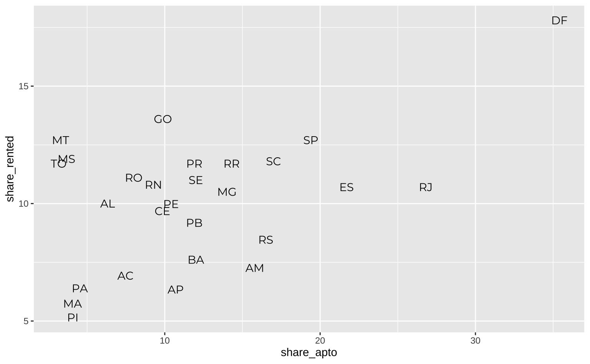
Unindo todos os elementos
Como de costume, um dos grandes diferenciais do ggplot2 é a possibilidade de adicionar elementos aos gráficos sequencialmente.
Exemplo: PIB e ciclos
Podemos resgatar nosso exemplo do PIB com os ciclos de recessão.
No código abaixo, uso um pouco de álgebra para plotar o texto no meio da região sombreada.
ggplot() +
geom_hline(yintercept = 100) +
geom_line(
data = pib,
aes(x = ref.date, y = value)
) +
geom_rect(
data = codace,
aes(
xmin = rec_start,
xmax = rec_end,
ymin = -Inf,
ymax = Inf,
group = label
),
alpha = 0.4
) +
geom_text(
data = codace,
aes(x = (rec_end - rec_start) / 2 + rec_start, y = 180, label = label),
size = 3
)Exemplo: IPCA
Podemos também mesclar um gráfico de colunas com texto. A tabela traz os valores do IPCA acumulados ano a ano desde 2013.
ipca <- tibble::tribble(
~ano,
~ipca,
2013,
5.91,
2014,
6.41,
2015,
10.67,
2016,
6.29,
2017,
2.95,
2018,
3.75,
2019,
4.31,
2020,
4.52,
2021,
10.06,
2022,
5.79
)No gráfico abaixo mostro a variação anual do IPCA com o valor percentual indicado em cima de cada coluna. Note como a função geom_text() recebe y + 0.5 como posição vertical.
ggplot(ipca, aes(x = ano, y = ipca)) +
#> Desenha a coluna com o valor do IPCA
geom_col() +
#> Linha horizontal no eixo-e
geom_hline(yintercept = 0) +
#> Número em cima de cada coluna
geom_text(aes(y = ipca + 0.5, label = ipca)) +
#> Força o eixo-x a imprimir todos os valores
scale_x_continuous(breaks = 2013:2022)Uma maneira alternativa de chegar no mesmo resultado é usando o argumento nudge_y, que cria um pequeno deslocamento no eixo-y.
ggplot(ipca, aes(x = ano, y = ipca)) +
geom_col() +
geom_hline(yintercept = 0) +
#> Usa nudge_y ao invés de ipca + 0.5
geom_text(aes(y = ipca, label = ipca), nudge_y = 0.5) +
scale_x_continuous(breaks = 2013:2022)As funções round, paste, paste0 e format podem ser muito úteis para melhor apresentar resultados numéricos6. Esta funções servem para arredondar números, concatenar strings e formatar números (usando ponto para separar milhar, vírgula para separar decimal, etc.). No código abaixo mostro um passo-a-passo de como usar estas funções para formatar o número em cima de cada coluna.
ipca <- ipca %>%
mutate(
# Arredonda até a primeira casa decimal
ipca_label = round(ipca, 1),
# Usa vírgula como separador de decimal
ipca_label = format(ipca_label, decimal.mark = ","),
# Coloca '%' no final do string
ipca_label = paste0(ipca_label, "%")
)
ggplot(ipca, aes(x = ano, y = ipca)) +
geom_col() +
geom_hline(yintercept = 0) +
geom_text(aes(y = ipca + 0.5, label = ipca_label)) +
scale_x_continuous(breaks = 2013:2022)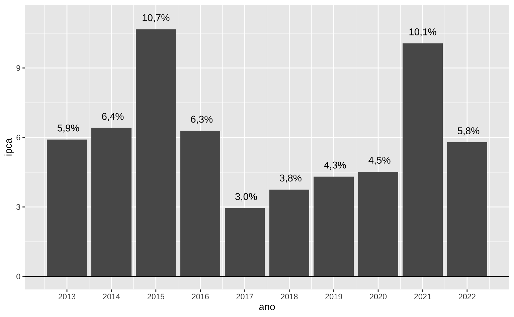
Exemplo: Demografia
A tabela abaixo mostra a representatividade de cada grande grupo demográfico na população brasileira aos longo dos anos. Aqui, usam-se as seguintes definições: população jovem (14 anos ou menos); população adulta (de 15 a 64 anos); população idosa (65 anos ou mais). Os valores estão em percentuais.
tbl_demographics <- tribble(
~year,
~young,
~adult,
~elder,
#----#-------#-------#-------#
1950,
0.4246,
0.5515,
0.0239,
1960,
0.4400,
0.5338,
0.0261,
1970,
0.4284,
0.5400,
0.0315,
1980,
0.3859,
0.5763,
0.0377,
1990,
0.3545,
0.6012,
0.0442,
2000,
0.3011,
0.6442,
0.0545,
2010,
0.2499,
0.6817,
0.0683,
2020,
0.2099,
0.6986,
0.0914
)Antes de visualizar os dados é preciso converter esta tabela para um formato longitudinal, onde cada linha representa um ano-grupo, isto é, cada linha indica o share da população de determinado grupo da população num determinado ano. Para isto uso a função pivot_longer(). Além disso eu transformo a coluna age_group num factor ordenado para melhorar a visualização.
No exemplo abaixo eu também ajusto o dado da coluna share: eu multiplico o valor por 100, arredondo até a primeira casa decimal, uso a vírgula como separador de decimal e coloco um sinal de “%” após o número.
demo <- tbl_demographics %>%
pivot_longer(
cols = young:elder,
names_to = "age_group",
values_to = "share"
) %>%
mutate(
age_group = factor(age_group, levels = c("elder", "adult", "young")),
# Arredonda na primeira casa decimal
share_label = round(share * 100, 1),
# Usa vírgula como separador de decimal
share_label = format(share_label, decimal.mark = ","),
# Coloca '%' no final do string
share_label = paste0(share_label, "%")
)Para montar o gráfico eu utilizo o argumento position_stack(), já apresentado no post introdutório sobre gráficos de coluna. A função geom_text() aceita o mesmo argumento; note que coloco o valor vjust = 0.5. Este valor indica que desejo que o texto fica exatamente no meio da coluna, no seu respectivo grupo.
Outras opções seriam: vjust = 0 para colocar o valor na base da coluna ou vjust = 1 para colocar o valor no topo da coluna.
ggplot(demo, aes(x = year, y = share, fill = age_group)) +
geom_col(position = position_stack()) +
geom_hline(yintercept = 0) +
geom_text(aes(label = share_label), position = position_stack(vjust = 0.5)) +
scale_x_continuous(breaks = seq(1950, 2020, 10)) +
theme(legend.position = "top")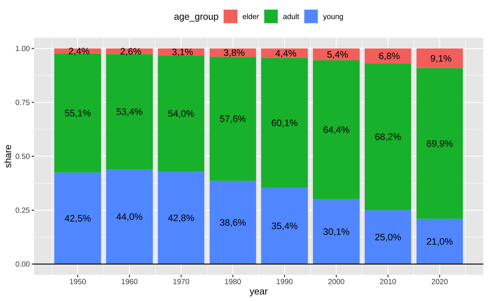
Exemplo: carros (de novo…)
Por fim, monto mais um exemplo de como combinar gráficos de coluna com texto. No gráfico abaixo eu mostro a eficiência (milhas por galão) de um subconjunto de carros (os que tem 4 cilindradas). Além disso, eu ordeno o nome dos carros pela variável mpg.
tbl_cars <- mtcars %>%
filter(cyl == 4) %>%
mutate(
name_car = rownames(.),
name_car = factor(name_car),
name_car = forcats::fct_reorder(name_car, mpg)
) %>%
select(name_car, mpg)Usando o geom_text() eu consigo plotar o nome do modelo dentro da coluna assim como o respectivo valor de mpg. Note como uso fontface = 'bold' para deixar o valor numérico em negrito.
ggplot(tbl_cars, aes(x = name_car, y = mpg)) +
geom_col(fill = "#186177") +
geom_hline(yintercept = 0) +
geom_text(
aes(y = 1, label = name_car),
color = "#F9F7F3",
hjust = 0
) +
geom_text(
aes(y = mpg - 2, label = mpg),
color = "#F9F7F3",
fontface = "bold"
) +
coord_flip()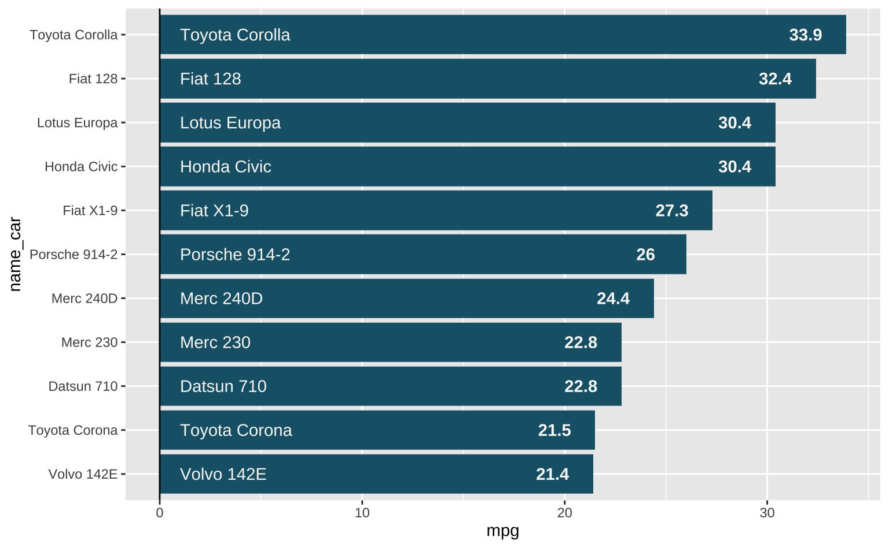
Infelizmente, o gráfico acaba sobrecarregado com informação redundante, mas veremos como controlar os aspectos estéticos do gráfico em si (e.g. cor do fundo, texto nos eixos, etc.) num post futuro.
Resumo
Neste post, apresentei algumas estratégias para destacar informação visualmente no gráfico. Vimos como
- Desenhar linhas com
geom_vline(),geom_hline()egeom_abline(). - Destacar partes do gráfico com
geom_rect(). - Destacar informações numéricas e texto usando
geom_text()eannotate().
É muito útil ter estas funções no seu ferramental, pois elas ajudam a criar visualizações diferenciadas e destacam informações importantes de maneira intuitiva. Em particular, eu uso estas funções frequentemente no meu dia a dia.
Footnotes
Mais especificamente, a série trimestral do PIB dessazonalizado a preços de mercado com valores encadeados com base no primeiro trimestre de 1995.↩︎
O Comitê de Datação de Ciclos Econômicos (CODACE) organizado pela Fundação Getúlio Vargas (FGV) se reúne periodicamente para datar os ciclos econômicos brasileiros.↩︎
Este esforço adicional é feito por motivos didáticos. Na prática não é necessário usar a função
tribble.↩︎Para mais informações sobre esta base consulte
help("mtcars").↩︎O pacote {ggrepel} cria pequenos deslocamentos na posição do texto e setas para melhor dispor os dados. Para mais informações veja o site.↩︎
Outra opção interessante é função
glue::glue().↩︎